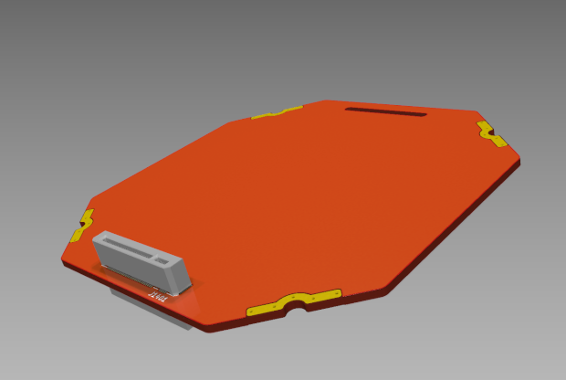

This project template forms the basis of PCBs for the Build a CubeSat project.
This form factor allows the PCB to be mounted via rail clamps or bolted down. It's set up with the standard 1.6mm 6L stackup from PCBWay, but 4L differential pair net classes for CAN and USB 2.0 are also included. Two pass-through M.2 bacBus connectors are pre-placed on the Ym side for single bus use. For dual-bus use, the slot on the Yp side can be replaced by another pair of connectors with the same spacing to the center. The overall dimensions are 85.0 x 85.0 mm, 92.5 mm diagonally. For bolt mounting, diagonal spacing of the bolts can be 93 mm, or 33 mm (13 x 1/10") in X and Y from origin.
Follow along on YouTube.
Everything in this project Open Source (CC BY-SA 4.0) unless otherwise stated. Get the files from Codeberg.
